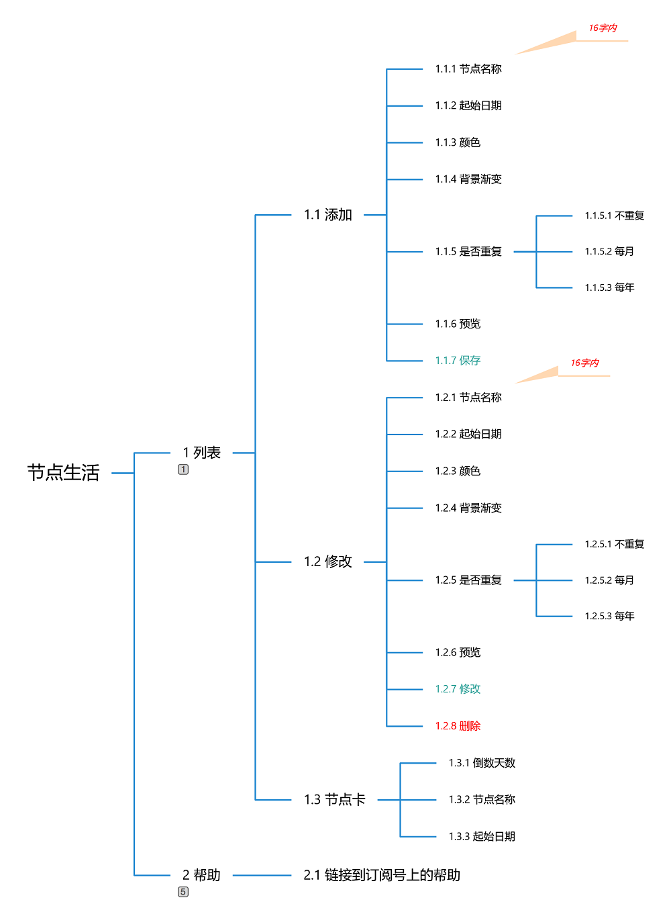
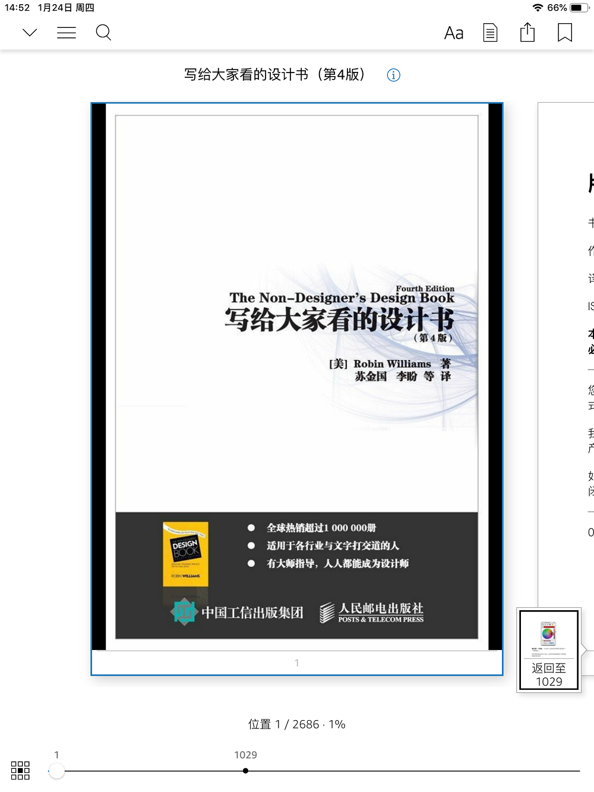
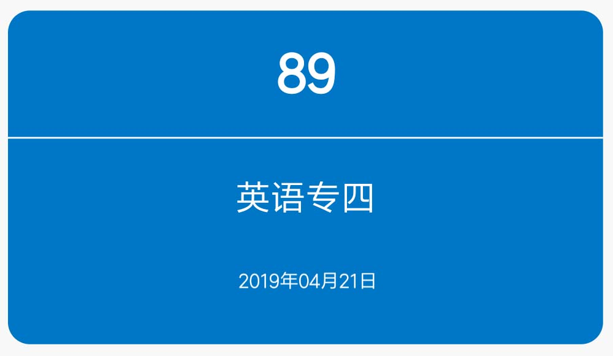
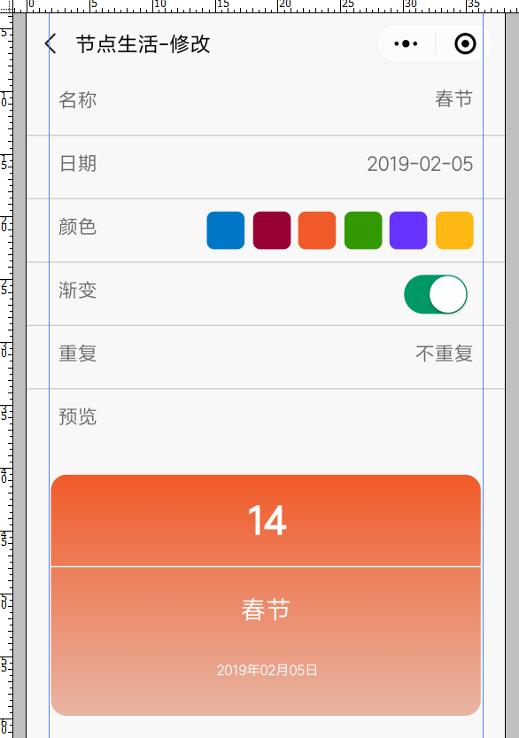
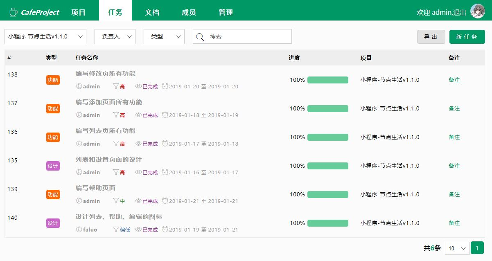

个人开发者，在没有购得任何服务器，没有其它公司任何支持，无法使用小程序官方提供的高级功能的情况下，能开发出什么样的应用呢？“节点生活”就是我的回答。它是一款纯粹的倒数日类应用，说白了，就是帮你掰着手指头数日子的应用。无论你是年轻人还是爷爷奶奶辈儿的，只要有什么重要的事需要查天数，那您就是我的用户。数日子，一个极其微小，但在某些极特定的情况下却有可能是接近于刚需的需求（相信大家高三的时候教室墙上都挂着高考倒计时吧？），用“小程序”来实现实在是再合适不过了。
别看“节点生活”的功能简单，前期准备工作对于我来说是比较困难的。程序员嘛，最擅长的就是搞定技术，技术以外的就都不太在行了，甚至可能连基础知识都没有。而技术只是一款程序中的一小部分而已。我是这么一步步来完成这款应用的：
首先，是规划功能点。倒数日类的程序算是应用范围比较广的。需求简单，功能点也比较固定。

上图是功能点的思维导图。和同类型的工具相比，我做了两点改动。一是去除了分类。主要是考虑到在一段时间范围内，并不会有太多重要到需要您数着日子来规划的事情，所以列表中不会有太多数据，分类也就没有用了。二是事项重复的方式，我只保留了按月和按年重复，而删除了按周重复。以我的拙见，每周固定时间会发生的事情没有必要写在APP里吧？而按月和按年重复就非常有必要了。以按月为例，有不少喜欢用倒数日类应用的朋友都喜欢把发薪日记下来，看看离下次发薪水还有几天，认真规划开销，不再做月光族；也有人喜欢把还款日记录下来，让自己提前做好准备。这一功能点上我的处理方式也可能和同类应用略有不同。比如，我们都知道每年的2月、4月、6月、9月和11月份只有30天，如果你设置了每月的31号重复一件事，那这一年内就只能被提醒七次了。因为“每月31日提醒做某事”这一需求在我看来本身就有问题。同样的，如果您设置了每月29号提醒做某事，那么2月份可能会有问题。取决于当年的2月份有没有29号。
其次，是设计界面。功能点已经敲定了，但是界面怎么办？虽然我没指望对界面设计一窍不通的我一下子能设计出多华丽的界面，但至少也要让大家能看得下去。于是我买了本参考书。

个人觉得这本书作为外行的入门书挺不错。虽然我才看了1/3，但是引言中的四大原则和第四章对名片设计的几个小例子已经对我有很大的影响了，所以我才做了出这种卡片式的列表。

这种卡片非常简洁，对比强烈，上面的信息一目了然。最醒目的是事项名称和天数。起始日期作为次要信息用稍小的字号标在了最下面。虽然不是什么华丽的界面，但是相对于我上一版简陋的列表来说好了许多。添加和修改页面并没有做过什么设计，只是把文字和预览图片等原素对齐了而已。很多时候只要把“对齐”这一件事做好，界面就会显得很漂亮。

最后才是开发。到了开发这一阶段就简单了。共用5天时间，并非每天8小时，只是有空时写个2、3个小时，就开发完了。下面是任务进度表。我用自己之前开发的CafeProject来管理自己的项目进度。

在我看来，腾讯提供的官方开发文档算是非常详尽了，语言也就是JS/CSS那一套，所以并没有什么难度。只不过这次用来开发的硬件比较让我头痛。90%的代码都是在我以前提过的那部只有4G内存，64G的eMMC存储的Surface Go上完成的。开发过程中卡顿严重，但是仍然可以完成工作。并不是我自虐非得用这么差的本子，而只是好奇如果把低配的Surface Go作为垒代码的工具，它的极限在哪里。显然，这就是了。本以为只要不用Eclipse或iDea那种“重型”IDE开发就没问题的。看来我还是太天真。
“节点生活”是我自己比较满意的第一个手机端程序（虽然还只是小程序）。在发布之前曾经拿给朋友们试用，朋友们比较给面子，从他们那里得到了最高评价——“还行”！不开玩笑。因为众口难调，所以大家一致都觉得“还行”真的就是最高评价了。当然我也希望所有人都说“很棒”，但我知道路还行长。从产品上来说：找定位、功能设计；从界面上来说：页面设计、交互等等，我都是新手，都不太懂，并且还只能自学，没有人来教我。不过，我习惯了。我最喜欢自学了。欢迎在微信中搜索“节点生活”或者直接扫描下方二维码体验一下，多给我提提建议，我一定会虚心听取。

[此文原载于我的公众号——iFaluo的落英缤纷——上。原文地址：倒数日类小程序—节点生活开发总结 ]